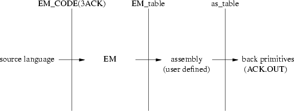
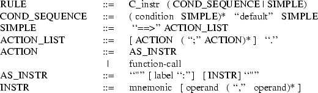
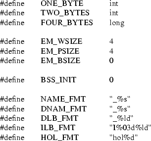
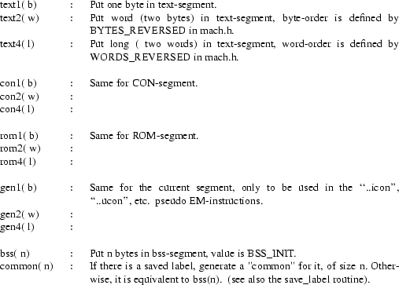
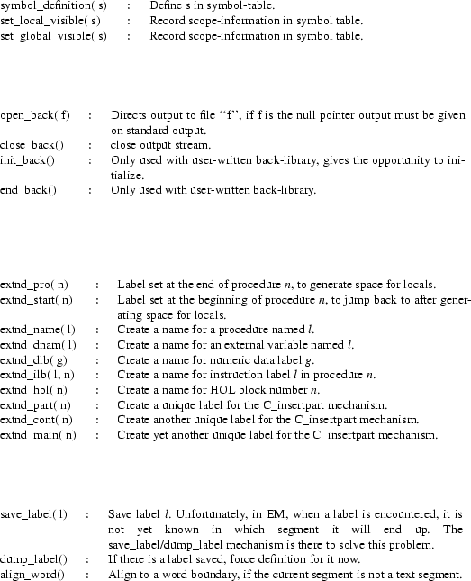
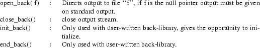
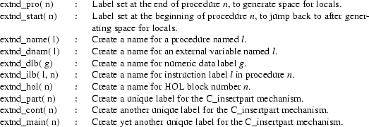

A code expander (ce for short) is a part of the Amsterdam Compiler Kit 1 (ACK) and provides the user with high-speed generation of medium-quality code. Although conceptually equivalent to the more usual code generator, it differs in some aspects.
Normally, a program to be compiled with ACK is first fed to the preprocessor. The output of the preprocessor goes into the appropriate front end, which produces EM 2 (a machine independent low level intermediate code). The generated EM code is fed into the peephole optimizer, which scans it with a window of a few instructions, replacing certain inefficient code sequences by better ones. After the peephole optimizer a back end follows, which produces high-quality assembly code. The assembly code goes via the target optimizer into the assembler and the object code then goes into the linker/loader, the final component in the pipeline.
For various applications this scheme is too slow. When debugging, for example, compile time is more important than execution time of a program. For this purpose a new scheme is introduced:
|
1: |
The code generator and assembler are replaced by a library, the code expander, consisting of a set of routines, one for every EM-instruction. Each routine expands its EM-instruction into relocatable object code. In contrast, the usual ACK code generator uses expensive pattern matching on sequences of EM-instructions. The peephole and target optimizer are not used. |
|
2: |
These routines replace the usual EM-generating routines in the front end; this eliminates the overhead of intermediate files. |
This results in a fast compiler producing object file, ready to be linked and loaded, at the cost of unoptimized object code.
Because of the simple nature of the code expander, it is much easier to build, to debug, and to test. Experience has demonstrated that a code expander can be constructed, debugged, and tested in less than two weeks.
This document describes the tools for automatically generating a ce (a library of C files) from two tables and a few machine-dependent functions. A thorough knowledge of EM is necessary to understand this document.
The code expander generator (ceg) generates a code expander from two tables and a few machine-dependent functions. This section explains how ceg works. The first half describes the transformations that are done on the two tables. The second half tells how these transformations are done by the ceg.
A code expander consists of a set of routines that convert EM-instructions directly to relocatable object code. These routines are called by a front end through the EM_CODE(3ACK) 3 interface. To free the table writer of the burden of building an object file, we supply a set of routines that build an object file in the ACK.OUT(5ACK) 4 format (see appendix B). This set of routines is called the back-primitives (see appendix A). In short, a code expander consists of a set of routines that map the EM_CODE interface on the back-primitives interface.
To avoid repetition of the same sequences of back-primitives in different EM-instructions and to improve readability, the EM-to-object information must be supplied in two tables. The EM_table maps EM to an assembly language, and the as_table maps assembly code to back-primitives. The assembly language is chosen by the table writer. It can either be an actual assembly language or his ad-hoc designed language.
The following picture shows the dependencies between the different components:

The picture suggests that, during compilation, the EM instructions are first transformed into assembly instructions and then the assembly instructions are transformed into object-generating calls. This is not what happens in practice, although the user is free to think it does. Actually, however the EM_table and the as_table are combined during code expander generation time, yielding an imaginary compound table that results in routines from the EM_CODE interface that generate object code directly.
As already indicated, the compound table does not exist either. Instead, each assembly instruction in the as_table is converted to a routine generating C 5 code to generate C code to call the back-primitives. The EM_table is converted into a program that for each EM instruction generates a routine, using the routines generated from the as_table. Execution of the latter program will then generate the code expander.
This scheme allows great flexibility in the table writing, while still resulting in a very efficient code expander. One implication is that the as_table is interpreted twice and the EM_table only once. This has consequences for their structure.
To illustrate what happens, we give an example. The example is an entry in the tables for the VAX-machine. The assembly language chosen is a subset of the VAX assembly language.
One of the most fundamental operations in EM is ‘‘loc c’’, load the value of c on the stack. To expand this instruction the tables contain the following information:
EM_table :
C_loc ==> "pushl $$$1".
/* $1 refers to the first argument of C_loc.
* $$ is a quoted $. */
as_table :
pushl src : CONST ==>
@text1( 0xd0);
@text1( 0xef);
@text4( %$( src->num)).
The as_table is transformed in the following routine:
pushl_instr(src)
t_operand *src;
/* ‘‘t_operand’’ is a struct defined by the
* table writer. */
{
printf("swtxt();");
printf("text1( 0xd0 );");
printf("text1( 0xef );");
printf("text4(%s);", substitute_dollar( src->num));
}
Using ‘‘pushl_instr()’’, the following routine is generated from the EM_table:
C_loc( c)
arith c;
/* text1() and text4() are library routines that fill the
* text segment. */
{
swtxt();
text1( 0xd0);
text1( 0xef);
text4( c);
}
A compiler call to ‘‘C_loc()’’ will cause the 1-byte numbers ‘‘0xd0’’ and ‘‘0xef’’ and the 4-byte value of the variable ‘‘c’’ to be stored in the text segment.
The transformations on the tables are done automatically by the code expander generator. The code expander generator is made up of two tools: emg and asg. Asg transforms each assembly instruction into a C routine. These C routines generate calls to the back-primitives. The generated C routines are used by emg to generate the actual code expander from the EM_table.
The link between emg and asg is an assembly language. We did not enforce a specific syntax for the assembly language; instead we have given the table writer the freedom to make an ad-hoc assembly language or to use an actual assembly language suitable for his purpose. Apart from a greater flexibility this has another advantage; if the table writer adopts the assembly language that runs on the machine at hand, he can test the EM_table independently from the as_table. Of course there is a price to pay: the table writer has to do the decoding of the operands himself. See section 4 for more details.
Before we describe the structure of the tables in detail, we will give an overview of the four main phases.
phase 1:
|
The as_table is transformed by asg. This results in a set of C routines. Each assembly-opcode generates one C routine. Note that a call to such a routine does not generate the corresponding object code; it generates C code, which, when executed, generates the desired object code. |
phase 2:
|
The C routines generated by asg are used by emg to expand the EM_table. This results in a set of C routines, the code expander, which conform to the procedural interface EM_CODE(3ACK). A call to such a routine does indeed generate the desired object code. |
phase 3:
|
The front end that uses the procedural interface is linked/loaded with the code expander generated in phase 2 and the back-primitives (a supplied library). This results in a compiler. |
phase 4:
|
The compiler runs. The routines in the code expander are executed and produce object code. |
This section describes the EM_table. It contains four subsections. The first 3 sections describe the syntax of the EM_table, the semantics of the EM_table, and the functions and constants that must be present in the EM_table, in the file ‘‘mach.c’’ or in the file ‘‘mach.h’’. The last section explains how a table writer can generate assembly code instead of object code. The section on semantics contains many examples.
The following grammar describes the syntax of the EM_table.

The ‘‘(’’ ‘‘)’’ brackets are used for grouping, ‘‘[’’ ... ‘‘]’’ means ... 0 or 1 time, a ‘‘*’’ means zero or more times, and a ‘‘|’’ means a choice between left or right. A C_instr is a name in the EM_CODE(3ACK) interface. condition is a C expression. function-call is a call of a C function. label, mnemonic, and operand are arbitrary strings. If an operand contains brackets, the brackets must match. There is an upper bound on the number of operands; the maximum number is defined by the constant MAX_OPERANDS in de file ‘‘const.h’’ in the directory assemble.c. Comments in the table should be placed between ‘‘/*’’ and ‘‘*/’’. The table is processed by the C preprocessor, before being parsed by emg.
The EM_table is processed by emg. Emg generates a C function for every instruction in the EM_CODE(3ACK). For every EM-instruction not mentioned in the EM_table, a C function that prints an error message is generated. It is possible to divide the EM_CODE(3ACK)-interface into four parts :
|
1: |
text instructions (e.g., C_loc, C_adi, ..) |
|
2: |
pseudo instructions (e.g., C_open, C_df_ilb, ..) |
|
3: |
storage instructions (e.g., C_rom_icon, ..) |
|
4: |
message instructions (e.g., C_mes_begin, ..) |
This section starts with giving the semantics of the grammar. The examples are text instructions. The section ends with remarks on the pseudo instructions and the storage instructions. Since message instructions are not useful for a code expander, they are ignored.
The EM_table is made up of rules describing how to expand a C_instr defined by the EM_CODE(3ACK)-interface (corresponding to an EM instruction) into actions. There are two kinds of actions: assembly instructions and C function calls. An assembly instruction is defined as a mnemonic followed by zero or more operands separated by commas. The semantics of an assembly instruction is defined by the table writer. When the assembly language is not expressive enough, then, as an escape route, function calls can be made. However, this reduces the speed of the actual code expander. Finally, actions can be grouped into a list of actions; actions are separated by a semicolon and terminated by a ‘‘.’’.
C_nop ==> .
/* Empty action list : no operation. */
C_inc ==> "incl (sp)".
/* Assembler instruction, which is evaluated
* during expansion of the EM_table */
C_slu ==> C_sli( $1).
/* Function call, which is evaluated during
* execution of the compiler. */
Since an assembly language without instruction labels is a rather weak language, labels inside a contiguous block of assembly instructions are allowed. When using labels two rules must be observed:
|
1: |
The name of a label should be unique inside an action list. |
|
2: |
The labels used in an assembler instruction should be defined in the same action list. |
The following example illustrates the usage of labels.
/* Compare the two top elements on the stack. */
C_cmp ==> "pop bx";
"pop cx";
"xor ax, ax";
"cmp cx, bx";
/* Forward jump to local label */
"je 2f";
"jb 1f";
"inc ax";
"jmp 2f";
"1: dec ax";
"2: push ax".
We will come back to labels in the section on the as_table.
In most cases the translation of a C_instr depends on its arguments. The arguments of a C_instr are numbered from 1 to n, where n is the total number of arguments of the current C_instr (there are a few exceptions, see Implicit arguments). The table writer may refer to an argument as $i. If a plain $-sign is needed in an assembly instruction, it must be preceded by a extra $-sign.
There are two groups of C_instrs whose arguments are handled specially:
|
1: Instructions dealing with local offsets |
|
The value of the $i argument referring to a parameter ($i >= 0) is increased by ‘‘EM_BSIZE’’. ‘‘EM_BSIZE’’ is the size of the return status block and must be defined in the file ‘‘mach.h’’ (see section 3.3). For example : C_lol ==> "push $1(bp)".
/* automatic conversion of $1 */
|
|
2: Instructions using global names or instruction labels |
|
All the arguments referring to global names or instruction labels will be transformed into a unique assembly name. To prevent name clashes with library names the table writer has to provide the conversions in the file ‘‘mach.h’’. For example : C_bra ==> "jmp $1".
/* automatic conversion of $1 */
/* type arith is converted to string */
|
The rules in the EM_table can be divided into two groups: simple rules and conditional rules. The simple rules are made up of a C_instr followed by a list of actions, as described above. The conditional rules (COND_SEQUENCE) allow the table writer to select an action list depending on the value of a condition.
A CONDITIONAL is a list of a boolean expression with the corresponding simple rule. If the expression evaluates to true then the corresponding simple rule is carried out. If more than one condition evaluates to true, the first one is chosen. The last case of a COND_SEQUENCE of a C_instr must handle the default case. The boolean expressions in a COND_SEQUENCE must be C expressions. Besides the ordinary C operators and constants, $i references can be used in an expression.
/* Load address of LB $1 levels back. */
C_lxl
$1 == 0 ==> "pushl fp".
$1 == 1 ==> "pushl 4(ap)".
default ==> "movl $$$1, r0";
"jsb .lxl";
"pushl r0".
EM instructions with an external as an argument come in three variants in the EM_CODE(3ACK) interface. In most cases it will be possible to take these variants together. For this purpose the ‘‘..’’ notation is introduced. For the code expander there is no difference between the following instructions.
C_loe_dlb ==> "pushl $1 + $2".
C_loe_dnam ==> "pushl $1 + $2".
C_loe ==> "pushl $1 + $2".
So it can be written in the following way.
C_loe.. ==> "pushl $1 + $2".
In the last example ‘‘C_loe’’ has two arguments, but in the EM_CODE interface it has one argument. This argument depends on the current ‘‘hol’’ block; in the EM_table this is made explicit. Every C_instr whose argument depends on a ‘‘hol’’ block has one extra argument; argument 1 refers to the ‘‘hol’’ block.
Most pseudo instructions are machine independent and are provided by ceg. The table writer has only to supply the following functions, which are used to build a stackframe:
C_prolog()
/* Performs the prolog, for example save
* return address */
C_locals( n)
arith n;
/* Allocate n bytes for locals on the stack */
C_jump( label)
char *label;
/* Generates code for a jump to ‘‘label’’ */
These functions can be defined in ‘‘mach.c’’ or in the EM_table (see section 3.3).
The storage instructions ‘‘C_bss_cstp()’’, ‘‘C_hol_cstp()’’, dealing with constants of type string (C_..._icon, C_..._ucon, C_..._fcon), are generated automatically. No information is needed in the table. To generate the C_..._icon, C_..._ucon, C_..._fcon instructions ceg only has to know how to convert a number of type string to bytes; this can be defined with the constants ONE_BYTE, TWO_BYTES, and FOUR_BYTES. C_rom_icon, C_con_icon, C_bss_icon, C_hol_icon can be abbreviated by ..icon. This also holds for ..ucon and ..fcon. For example :
\.\.icon
$2 == 1 ==> gen1( (ONE_BYTE) atoi( $1)).
$2 == 2 ==> gen2( (TWO_BYTES) atoi( $1)).
$2 == 4 ==> gen4( (FOUR_BYTES) atol( $1)).
default ==> arg_error( "..icon", $2).
Gen1(), gen2() and gen4() are back-primitives (see appendix A), and generate one, two, or four byte constants. Atoi() is a C library function that converts strings to integers. The constants ‘‘ONE_BYTE’’, ‘‘TWO_BYTES’’, and ‘‘FOUR_BYTES’’ must be defined in the file ‘‘mach.h’’.
If the table writer uses all the default functions he has only to supply the following constants and functions :
An example of the file ‘‘mach.h’’ for the vax4.

Notice that EM_BSIZE is zero. The vax ‘‘call’’ instruction takes automatically care of the base block.
There are three primitives that have to be defined by the table writer, either as functions in the file ‘‘mach.c’’ or as rules in the EM_table. For example, for the 8086 they look like this:
C_jump ==> "jmp $1".
C_prolog ==> "push bp";
"mov bp, sp".
C_locals
$1 == 0 ==> .
$1 == 2 ==> "push ax".
$1 == 4 ==> "push ax";
"push ax".
default ==> "sub sp, $1".
When the code expander generator is used for generating assembly instead of object code (see section 5), additional print formats have to be defined in ‘‘mach.h’’. The following table lists these formats.

This section describes the as_table. Like the previous section, it is divided into four parts: the first two parts describe the grammar and the semantics of the as_table; the third part gives an overview of the functions and the constants that must be present in the as_table (in the file ‘‘as.h’’ or in the file ‘‘as.c’’); the last part describes the case when assembly is generated instead of object code. The part on semantics contains examples that appear in the as_table for the VAX or for the 8086.
The form of the as_table is given by the following grammar :

mnemonic, operand, and type are all C identifiers; condition is a normal C expression; function-call must be a C function call. A function can be called with standard C arguments or with a reference (see section 4.2.4). Since the as_table is interpreted during code expander generation as well as during code expander execution, two levels of calls are present in it. A ‘‘function-call’’ is done during code expander generation, a ‘‘@function-call’’ during code expander execution.
The as_table is made up of rules that map assembly instructions onto back-primitives, a set of functions that construct an object file. The table is processed by asg, which generates a C functions for each assembler mnemonic. The names of these functions are the assembler mnemonics postfixed with ‘‘_instr’’ (e.g., ‘‘add’’ becomes ‘‘add_instr()’’). These functions will be used by the function assemble() during the expansion of the EM_table. After explaining the semantics of the as_table the function assemble() will be described.
A rule in the as_table is made up of a left and a right hand side; the left hand side describes an assembler instruction (mnemonic and operands); the right hand side gives the corresponding actions as back-primitives or as functions defined by the table writer, which call back-primitives. Two simple examples from the VAX as_table and the 8086 as_table, resp.:
movl src, dst ==> @text1( 0xd0);
gen_operand( src);
gen_operand( dst).
/* ‘‘gen_operand’’ is a function that encodes
* operands by calling back-primitives. */
rep ens:MOVS ==> @text1( 0xf3);
@text1( 0xa5).
In general, a machine instruction is encoded as an opcode followed by zero or more the operands. There are two methods for mapping assembler mnemonics onto opcodes: the mnemonic determines the opcode, or mnemonic and operands together determine the opcode. Both cases can be easily expressed in the as_table. The first case is obvious. The second case is handled by introducing type fields for the operands.
When mnemonic and operands together determine the opcode, the table writer has to give several rules for each combination of mnemonic and operands. The rules differ in the type fields of the operands. The table writer has to supply functions that check the type of the operand. The name of such a function is the name of the type; it has one argument: a pointer to a struct of type t_operand; it returns non-zero when the operand is of this type, otherwise it returns 0.
This will usually lead to a list of rules per mnemonic. To reduce the amount of work an abbreviation is supplied. Once the mnemonic is specified it can be referred to in the following rules by ‘‘...’’. One has to make sure that each mnemonic is mentioned only once in the as_table, otherwise asg will generate more than one function with the same name.
The following example shows the usage of type fields.
mov dst:REG, src:EADDR ==>
@text1( 0x8b); /* opcode */
mod_RM( %d(dst->reg), src). /* operands */
... dst:EADDR, src:REG ==>
@text1( 0x89); /* opcode */
mod_RM( %d(src->reg), dst). /* operands */
The table-writer must supply the restriction functions, REG and EADDR in the previous example, in ‘‘as.c’’ or ’’as.h’’.
The right hand side of a rule is made up of function calls. Since the as_table is interpreted on two levels, during code expander generation and during code expander execution, two levels of calls are present in it. A function-call without an ‘‘@’’-sign is called during code expander generation (e.g., the gen_operand() in the first example). A function call with an ‘‘@’’-sign is called during code expander execution (e.g., the back-primitives). So the last group will be part of the compiler.
The need for the ‘‘@’’-sign construction arises, for example, when implementing push/pop optimization (e.g., ‘‘push x’’ followed by ‘‘pop y’’ can be replaced by ‘‘move x, y’’). In this case flags need to be set, unset, and tested during the execution of the compiler:
PUSH src ==> /* save in ax */
mov_instr( AX_oper, src);
/* set flag */
@assign( push_waiting, TRUE).
POP dst ==> @if ( push_waiting)
/* ‘‘mov_instr’’ is asg-generated */
mov_instr( dst, AX_oper);
@assign( push_waiting, FALSE).
@else
/* ‘‘pop_instr’’ is asg-generated */
pop_instr( dst).
@fi.
Although the @-sign is followed syntactically by a function name, this function can very well be the name of a macro defined in C. This is in fact the case with ‘‘@assign()’’ in the above example.
The case may arise when information is needed that is not known until execution of the compiler. For example one needs to know if a ‘‘$i’’ argument fits in one byte. In this case one can use a special if-statement provided by asg: @if, @elsif, @else, @fi. This means that the conditions will be evaluated at run time of the ce. In such a condition one may of course refer to the ’’$i’’ arguments. For example, constants can be packed into one or two byte arguments as follows:
mov dst:ACCU, src:DATA ==>
@if ( fits_byte( %$(dst->expr)))
@text1( 0xc0);
@text1( %$(dst->expr)).
@else
@text1( 0xc8);
@text2( %$(dst->expr)).
@fi.
As noted before, the operands of an assembler instruction may be used as pointers to the struct t_operand in the right hand side of the table. Because of the free format assembler, the types of the fields in the struct t_operand are unknown to asg. As these fields can appear in calls to functions, asg must know these types. This section explains how these types must be specified.
References to operands come in three forms: ordinary operands, operands that contain ‘‘$i’’ references, and operands that refer to names of local labels. The ‘‘$i’’ in operands represent names or numbers of a C_instr and must be given as arguments to the back-primitives. Labels in operands must be converted to a number that tells the distance, the number of bytes, between the label and the current position in the text-segment.
All these three cases are treated in an uniform way. When the table writer makes a reference to an operand of an assembly instruction, he must describe the type of the operand in the following way.

The three cases differ only in the conversion field. The printformat conversion applies to ordinary operands. The ‘‘%$’’ applies to operands that contain a ‘‘$i’’. The expression between parentheses must result in a pointer to a char. The result of ‘‘%$’’ is of the type of ‘‘$i’’. The ‘‘%dist’’ applies to operands that refer to a local label. The expression between the brackets must result in a pointer to a char. The result of ‘‘%dist’’ is of type arith.
The following example illustrates the usage of ‘‘%$’’. (For an example that illustrates the usage of ordinary fields see the section on ‘‘User supplied definitions and functions’’).
jmp dst ==>
@text1( 0xe9);
@reloc2( %$(dst->lab), %$(dst->off), PC_REL).
A useful function concerning $is is arg_type(), which takes as input a string starting with $i and returns the type of the i’’th argument of the current EM-instruction, which can be STRING, ARITH or INT. One may need this function while decoding operands if the context of the $i does not give enough information. If the function arg_type() is used, the file arg_type.h must contain the definition of STRING, ARITH and INT.
%dist is only guaranteed to work when called as a parameter of text1(), text2() or text4(). The goal of the %dist conversion is to reduce the number of reloc1(), reloc2() and reloc4() calls, saving space and time (no relocation at compiler run time). The following example illustrates the usage of ‘‘%dist’’.
jmp dst:ILB ==> /* label in an instruction list */
@text1( 0xeb);
@text1( %dist( dst->lab)).
... dst:LABEL ==> /* global label */
@text1( 0xe9);
@reloc2( %$(dst->lab), %$(dst->off), PC_REL).
The functions assemble() and block_assemble() are provided by ceg. If, however, the table writer is not satisfied with the way they work he can supply his own assemble() or block_assemble(). The default function assemble() splits an assembly string into a label, mnemonic, and operands and performs the following actions on them:
|
1: |
It processes the local label; it records the name and current position. Thereafter it calls the function process_label() with one argument of type string, the label. The table writer has to define this function. |
|
2: |
Thereafter it calls the function process_mnemonic() with one argument of type string, the mnemonic. The table writer has to define this function. |
|
3: |
It calls process_operand() for each operand. Process_operand() must be written by the table-writer since no fixed representation for operands is enforced. It has two arguments: a string (the operand to decode) and a pointer to the struct t_operand. The declaration of the struct t_operand must be given in the file ‘‘as.h’’, and the table-writer can put all the information needed for encoding the operand in machine format in it. |
|
4: |
It examines the mnemonic and calls the associated function, generated by asg, with pointers to the decoded operands as arguments. This makes it possible to use the decoded operands in the right hand side of a rule (see below). |
If the default assemble() does not work the way the table writer wants, he can supply his own version of it. Assemble() has the following arguments:
assemble( instruction )
char *instruction;
instruction points to a null-terminated string.
The default function block_assemble() is called with a sequence of assembly instructions that belong to one action list. It calls assemble() for every assembly instruction in this block. But if a special action is required on a block of assembly instructions, the table writer only has to rewrite this function to get a new ceg that obliges to his wishes. The function block_assemble has the following arguments:
block_assemble( instructions, nr, first, last)
char **instruction;
int nr, first, last;
Instruction point to an array of pointers to strings representing assembly instructions. Nr is the number of instructions that must be assembled. First and last have no function in the default block_assemble(), but are useful when optimizations are done in block_assemble().
Four things have to be specified in ‘‘as.h’’ and ‘‘as.c’’. First the user must give the declaration of struct t_operand in ‘‘as.h’’, and the functions process_operand(), process_mnemonic(), and process_label() must be given in ‘‘as.c’’. If the right hand side of the as_table contains function calls other than the back-primitives, these functions must also be present in ‘‘as.c’’. Note that both the ‘‘@’’-sign (see 4.2.3) and ‘‘references’’ (see 4.2.4) also work in the functions defined in ‘‘as.c’’.
The following example shows the representative and essential parts of the 8086 ‘‘as.h’’ and ‘‘as.c’’ files.
/* Constants and type definitions in as.h */
#define UNKNOWN 0
#define IS_REG 0x1
#define IS_ACCU 0x2
#define IS_DATA 0x4
#define IS_LABEL 0x8
#define IS_MEM 0x10
#define IS_ADDR 0x20
#define IS_ILB 0x40
#define AX 0
#define BX 3
#define CL 1
#define SP 4
#define BP 5
#define SI 6
#define DI 7
#define REG( op) ( op->type & IS_REG)
#define ACCU( op) ( op->type & IS_REG && op->reg == AX)
#define REG_CL( op) ( op->type & IS_REG && op->reg == CL)
#define DATA( op) ( op->type & IS_DATA)
#define LABEL( op) ( op->type & IS_LABEL)
#define ILB( op) ( op->type & IS_ILB)
#define MEM( op) ( op->type & IS_MEM)
#define ADDR( op) ( op->type & IS_ADDR)
#define EADDR( op) ( op->type & ( IS_ADDR | IS_MEM | IS_REG))
#define CONST1( op) ( op->type & IS_DATA && strcmp( "1", op->expr) == 0)
#define MOVS( op) ( op->type & IS_LABEL&&strcmp("
#define IMMEDIATE( op) ( op->type & ( IS_DATA | IS_LABEL))
struct t_operand {
unsigned type;
int reg;
char *expr, *lab, *off;
};
extern struct t_operand saved_op, *AX_oper;
/* Some functions in as.c. */
#include "arg_type.h"
#include "as.h"
#define last( s) ( s + strlen( s) - 1)
#define LEFT ’(’
#define RIGHT ’)’
#define DOLLAR ’$’
process_operand( str, op)
char *str;
struct t_operand *op;
/* expr -> IS_DATA en IS_LABEL
* reg -> IS_REG en IS_ACCU
* (expr) -> IS_ADDR
* expr(reg) -> IS_MEM
*/
{
char *ptr, *index();
op->type = UNKNOWN;
if ( *last( str) == RIGHT) {
ptr = index( str, LEFT);
*last( str) = ’ ’;
*ptr = ’ ’;
if ( is_reg( ptr+1, op)) {
op->type = IS_MEM;
op->expr = ( *str == ’ ’ ? "0" : str);
}
else {
set_label( ptr+1, op);
op->type = IS_ADDR;
}
}
else
if ( is_reg( str, op))
op->type = IS_REG;
else {
if ( contains_label( str))
set_label( str, op);
else {
op->type = IS_DATA;
op->expr = str;
}
}
}
/*********************************************************************/
mod_RM( reg, op)
int reg;
struct t_operand *op;
/* This function helps to decode operands in machine format.
* Note the $-operators
*/
{
if ( REG( op))
R233( 0x3, reg, op->reg);
else if ( ADDR( op)) {
R233( 0x0, reg, 0x6);
@reloc2( %$(op->lab), %$(op->off), ABSOLUTE);
}
else if ( strcmp( op->expr, "0") == 0)
switch( op->reg) {
case SI : R233( 0x0, reg, 0x4);
break;
case DI : R233( 0x0, reg, 0x5);
break;
case BP : R233( 0x1, reg, 0x6); /* exception! */
@text1( 0);
break;
case BX : R233( 0x0, reg, 0x7);
break;
default : fprint( STDERR, "Wrong index register %d\n",
op->reg);
}
else {
@if ( fit_byte( %$(op->expr)))
switch( op->reg) {
case SI : R233( 0x1, reg, 0x4);
break;
case DI : R233( 0x1, reg, 0x5);
break;
case BP : R233( 0x1, reg, 0x6);
break;
case BX : R233( 0x1, reg, 0x7);
break;
default : fprint( STDERR, "Wrong index register %d\n",
op->reg);
}
@text1( %$(op->expr));
@else
switch( op->reg) {
case SI : R233( 0x2, reg, 0x4);
break;
case DI : R233( 0x2, reg, 0x5);
break;
case BP : R233( 0x2, reg, 0x6);
break;
case BX : R233( 0x2, reg, 0x7);
break;
default : fprint( STDERR, "Wrong index register %d\n",
op->reg);
}
@text2( %$(op->expr));
@fi
}
}
It is possible to generate assembly instead of object files (see section 5), in which case there is no need to supply ‘‘as_table’’, ‘‘as.h’’, and ‘‘as.c’’. This option is useful for debugging the EM_table.
This section describes how to generate a code expander in two phases. In phase one, the EM_table is written and assembly code is generated. If the assembly code is an actual language, the EM_table can be tested by assembling and running the generated code. If an ad-hoc assembly language is used by the table writer, it is not possible to test the EM_table, but the code generated is at least in readable form. In the second phase, the as_table is written and object code is generated. After the generated object code is fed into the loader, it can be tested.
The following is a list of instructions to make a code expander that generates assembly instructions.
|
1: |
Create a new directory. |
|
2: |
Create the ‘‘EM_table’’, ‘‘mach.h’’, and ‘‘mach.c’’ files; there is no need for ‘‘as_table’’, ‘‘as.h’’, and ‘‘as.c’’ at this moment. |
|
3: |
type |
|
install_ceg -as |
|
4: |
Link a front end, ‘‘ce.a’’, and ‘‘back.a’’ together resulting in a compiler that generates assembly code. |
If the table writer has chosen an actual assembly language, the EM_table can be tested (e.g., by running the compiler on the EM test set). If an error occurs, change the EM_table and type
|
update_ceg C_instr |
where C_instr stands for the name of the erroneous EM-instruction. If the table writer has chosen an ad-hoc assembly language, he can at least read the generated code and look for possible errors. If an error is found, the same procedure as described above can be followed.
The next phase is to generate a ce that produces relocatable object code.
|
1: |
Remove the ‘‘ce’’, ‘‘ceg’’, and ‘‘back’’ directories. |
|
2: |
Write the ‘‘as_table’’, ‘‘as.h’’, and ‘‘as.c’’ files. |
|
3: |
type |
install_ceg -obj
The option -obj means that ‘‘back.a’’ will contain a library for generating ACK.OUT(5ACK) object files, see appendix B. If the writer does not want to use the default ‘‘back.a’’, the -obj flag must omitted and a ‘‘back.a’’ should be supplied that generates the generates object code in the desired format.
|
4: |
Link a front end, ‘‘ce.a’’, and ‘‘back.a’’ together resulting in a compiler that generates object code. |
The as_table is ready to be tested. If an error occurs, adapt the table. Then there are two ways to proceed:
|
1: |
recompile the whole EM_table, |
update_ceg ALL
|
2: |
recompile just the few EM-instructions that contained the error, |
update_ceg C_instr
where C_instr is an erroneous EM-instruction. This has to be done for every EM-instruction that contained the erroneous assembly instruction.
We want to thank Henri Bal, Dick Grune, and Ceriel Jacobs for their valuable suggestions and the critical reading of this paper.
|
1. |
A.S. Tanenbaum, H. v. Staveren, E.G. Keizer, and J.W. Stevenson, “APractical Toolkit For Making Compilers,” Communications of the ACM, 26, 9 (September 1983). |
|
2. |
A.S. Tanenbuum, H. v. Staveren, E.G. Keizer, and J.W. Stevenson, “Description of a Machine Architecture for Use with Block Structured Languages,” IR-81, Dept. Mathematics and Computer Science, Vrije Universiteit, Amsterdam (August 1983). |
|
3. |
ACK Documentation, EM_CODE(3ACK), Dept. Mathematics and Computer Science, Vrije Universiteit, Amsterdam. |
|
4. |
ACK Documentation, ACK.OUT(5ACK), Dept. Mathematics and Computer Science, Vrije Universiteit, Amsterdam. |
|
5. |
B.W. Kernighan and D.M. Ritchie, The C Programming Language, Prentice-Hall Inc., Englewood Cliffs, New Jersey (1978). |
|
6. |
ACK Documentation, PRINT(3ACK), Dept. Mathematics and Computer Science, Vrije Universiteit, Amsterdam. |
This appendix describes the routines available to generate relocatable object code. If the default back.a is used, the object code is in ACK.OUT(5ACK) format. In de default back.a, the names defined here are remapped to more hidden names, to avoid name conflicts with for instance names used in the front-end. This remapping is done in an include-file, "back.h". A user-implemented back.a should do the same thing.
|
A1. |
Text and data generation; with ONE_BYTE b; TWO_BYTES w; FOUR_BYTES l; arith n; |

|
A2. |
Relocation; with char *s; arith o; int r; |

|
A3. |
Symbol table interaction; with int seg; char *s; |

|
A4. |
Start/end actions; with char *f; |

|
A5. |
Label generation routines; with int n; arith g; char *l; These routines all return a "char *" to a static area, which is overwritten at each call. |

|
A6. |
Some miscellaneous routines, with char *l; |

The object file produced by ce is by default in ACK.OUT(5ACK) format. The object file is made up of one header, followed by four segment headers, followed by text, data, relocation information, symbol table, and the string area. The object file is tuned for the ACK-LED, so there are some special things done just before the object file is dumped. First, four relocation records are added which contain the names of the four segments. Second, all the local relocation is resolved. This is done by the function do_relo(). If there is a record belonging to a local name this address is relocated in the segment to which the record belongs. Besides doing the local relocation, do_relo() changes the ‘‘nami’’-field of the local relocation records. This field receives the index of one of the four relocation records belonging to a segment. After the local relocation has been resolved the routine output_back() dumps the ACK object file.
If a different a.out format is wanted, one can choose between three strategies:
|
1: |
The most simple one is to use a conversion program, which converts the ACK a.out format to the wanted a.out format. This program exists for all most all machines on which ACK runs. However, not all conversion programs can generate relocation information. The disadvantage is that the compiler will become slower. |
|
2: |
A better solution is to change the functions output_back(), do_relo(), open_back(), and close_back() in such a way that they produce the wanted a.out format. This strategy saves a lot of I/O. |
|
3: |
If this still is not satisfactory, the back-primitives can be adapted to produce the wanted a.out format. |